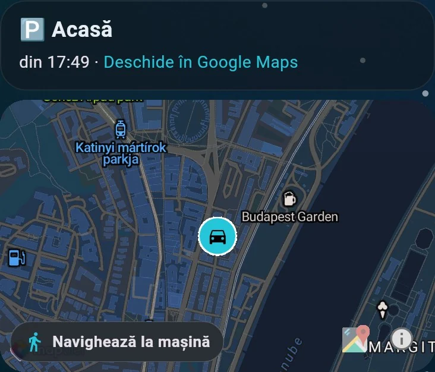
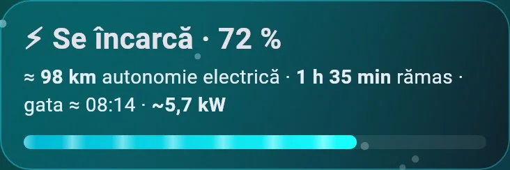
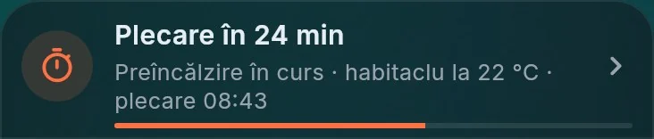

Totul dintr-o privire
Totul despre mașina ta, pe un singur ecran.
Baterie, combustibil și autonomie, închidere, uși și geamuri, anvelope și locul unde e parcată mașina – actualizate zi și noapte, cu propria ta mașină în culoarea ei reală.


Baterie, combustibil și autonomie dintr-o privire.
Ecranul principal începe cu ce verifici cel mai des: nivelul de încărcare și autonomia electrică, nivelul combustibilului și cât mai poți merge cu el. Estimarea de autonomie Carmeo acoperă și partea pe benzină, iar pe ecranul principal alegi cu comutatorul Mașină | Carmeo care e cifra principală.
- Mașina ta, în culoarea ei – alegi o dată modelul și vopseaua, iar imaginea le urmează.
- Blocată sau nu – un lacăt verde pe imagine și o avertizare dacă a rămas ceva deschis.
- Cât de proaspete sunt datele – ora ultimei actualizări este mereu pe ecran.

Unde e parcată – și drumul înapoi.
Carmeo arată mașina pe hartă, cu numele locului și de când stă acolo. O atingere deschide traseul până la mașină în aplicația ta de hărți.
- Propriile nume de locuri – Acasă, Birou, Sală – îți denumești o dată locurile obișnuite.
- Înregistrarea poate fi pusă pe pauză – oprești înregistrarea locației oricând vrei.


Uși, geamuri și anvelope, roată cu roată.
Ecranul Vehicul arată de sus fiecare ușă, fiecare geam și portbagajul. Ecranul Anvelope arată presiunea și temperatura fiecărei roți.


Mereu la zi, fără să țină mașina trează.
Carmeo cere date noi cam la 2 minute când conduci sau încarci și la 10 minute când mașina e parcată. După o comandă actualizează imediat.
Încearc-o pe mașina ta.
Carmeo este gratuit. Intră în grupul de testare deschisă pe iPhone sau Android.